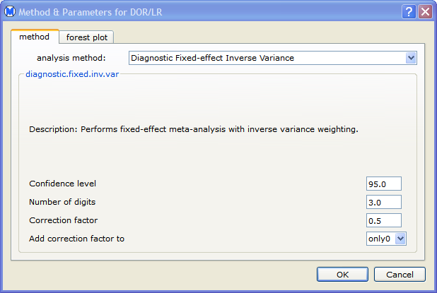

This section provides an example that illustrates how to perform a meta-analysis of diagnostic data.
To run the analysis, first open the sample data set lymph.oma by selecting open from the file menu and clicking lympy.oma.
Then do the following:
- Select Open from the file menu.
- Select the file lymph.oma.
- Click Open
- In the Analysis menu,
select meta-analysis . This opens the Diagnostic Metrics dialog, in which you can select the metrics that you want to use in the analysis.

- Click next. If sensitivity or specificity is selected, this opens the Method & Parameters for Sens./Spec. dialog, in which you can choose a method and parameters for both the sensitivity and specificity analyses.

- After making your selections, click next. This opens the Method & Parameters for DOR/LR dialog, where you can choose a method and parameters for the diagnostic odds ratio and likelihood ratios analysis.

- Click OK to run the analysis.
Notes:
- If neither sensitivity nor specificity are selected in the Diagnostics Metrics dialog, the Method & Parameters for Sens./Spec. dialog will not be displayed.
- If neither likelihood ratio nor diagnostic odds ratio are selected, the Method & Parameters for DOR/LR dialog will not be displayed.
The results are displayed in the results/analysis window, as shown below:
- The Summary contains the overall numerical results of the meta-analysis, including the summary estimate, confidence interval, and heterogeneity statistics.
- The Forest Plot provides a graphical display of the point estimates and confidence intervals for each study, as well as the overall estimate.

 | Example - Meta-Analysis of Binary Data | | Adding a Covariate |  |